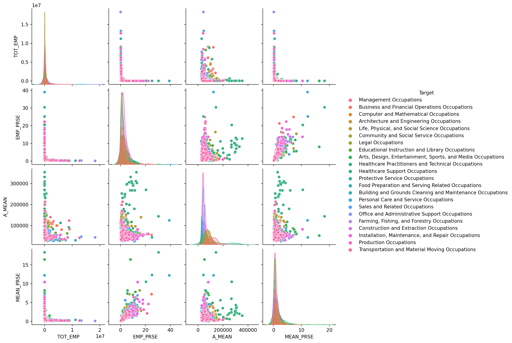
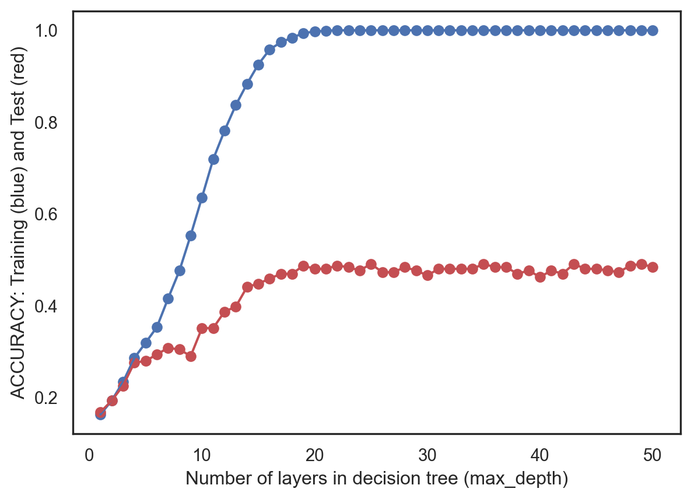
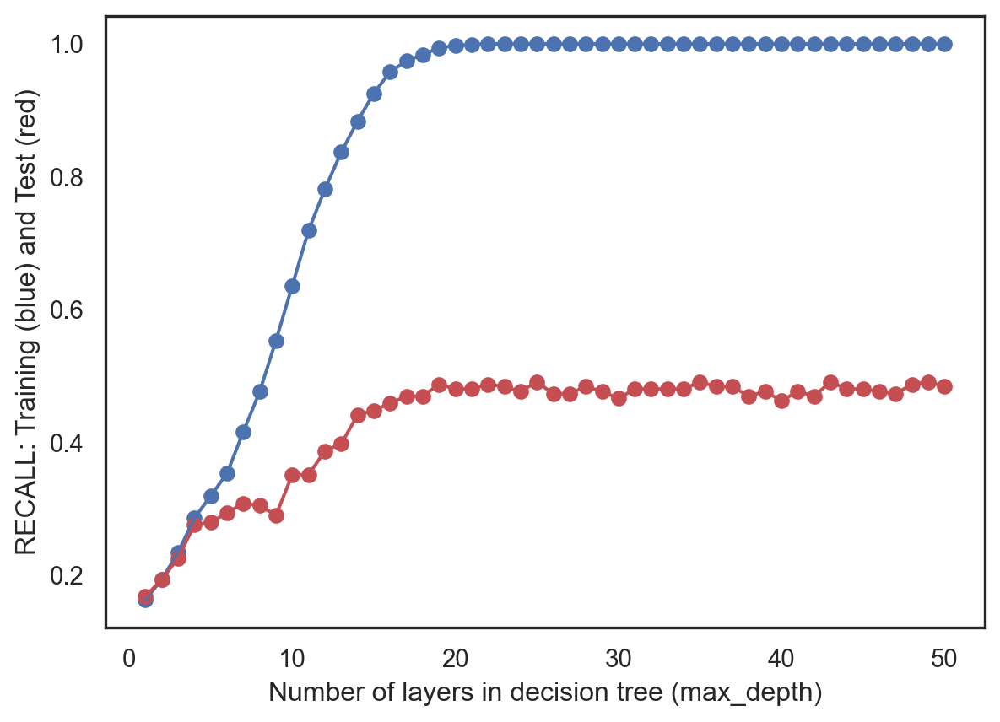

import sklearn
from sklearn import datasets
import numpy as np
import pandas as pd
import seaborn as sns
import matplotlib.pyplot as plt
from sklearn.metrics import accuracy_score
from sklearn.metrics import precision_score
from sklearn.metrics import recall_scoreClassification with Decision Trees
Methods
Decision Trees (DTs) are a non-parametric supervised learning method used for classification and regression. As the name suggests, DTs creates a tree-like structure consisting of decisions in the form of conditional (if) statements and their respective resulting consequences. DTs are conceptually similar to a flowchart, where each node of the tree represents a “Yes” or “No” test on a particular attribute, each branch represents the outcome of the test, and each leaf node represents a particular class to which a particular item would most likely belong.

For example, the above image is an example of a very elementary DT to decide (or classify) whether or not a person is fit. At the very top node (the root node), we typically have a question that can split the data set as “efficiently” as possible (although the metric for efficiency will differ based on the criterion). In this case, we first ask if a person is less than 30 years old. If so, we then ask if this person eats a lot of pizzas. If the answer is yes, then we’d conclude that this person is unfit; if the answer is no, we’d conclude that this person is fit. However, if this person is older than 30 years old, we ask if this person exercises in the morning. If the answer is yes, then we conclude that the person is fit; otherwise, we conclude that the person is unfit.
As per the example, simply asking a person’s age, frequency of pizza consumption, and exercise habits is probably insufficient to truly decide if a person is fit. This is a simplistic workflow, but the algorithms used by the DTs search for good tree rules that attempts to best classify the given dataset. However, finding the optimal tree is very difficult due to the infinite number of possible decision trees that can be constructed given the attributes of a data set. As such, DTs can be a good, computationally cheap starting point to find interesting trends within the data, which can later be further explored with more detailed and computationally expensive methods.
For our analysis below, we will be using the Bureau of Labor Statistics’ wages by occupation data set. We will attempt to classify which job type (e.g. Managerial, Legal, Business) an occupation falls under given the occupation’s total employment, mean annual wage, employment percent standard relative error, and mean annual wage percent standard relative error.
Imports
Load Data
df = pd.read_csv('../../../data/01-modified-data/occupations_detailed_(employment_and_wage).csv')
## drop unneeded column created from read_csv
df = df.iloc[:, 1:]Separate Predictor and Response Variables
# Y="Target" COLUMN and X="everything else"
X = df.iloc[:, 2:6]
Y = df.iloc[:, 7]Normalization
Since our predictors (X) consist of employment rates and mean annual wages, we first normalize our data to bring all the predictor values into a space that is unitless. This transformation of data brings everything to a similar scale, which makes it easier for the DT algorithm to “learn” the data.
X=0.1+(X-np.min(X,axis=0))/(np.max(X,axis=0)-np.min(X,axis=0))Class Distribution
Numerical EDA
As shown in the output below, our target class is heavily imbalanced. Since this imbalance can skew the way the data is split into training and test sets, we will later stratify the data so the proportion of values in the training and test sets also reflect this imbalance.
df['Target'].value_counts(ascending=True)Legal Occupations 15
Building and Grounds Cleaning and Maintenance Occupations 18
Farming, Fishing, and Forestry Occupations 24
Community and Social Service Occupations 26
Healthcare Support Occupations 27
Food Preparation and Serving Related Occupations 33
Computer and Mathematical Occupations 36
Sales and Related Occupations 42
Protective Service Occupations 43
Arts, Design, Entertainment, Sports, and Media Occupations 55
Business and Financial Operations Occupations 58
Personal Care and Service Occupations 60
Architecture and Engineering Occupations 61
Management Occupations 73
Installation, Maintenance, and Repair Occupations 75
Life, Physical, and Social Science Occupations 79
Transportation and Material Moving Occupations 91
Educational Instruction and Library Occupations 97
Healthcare Practitioners and Technical Occupations 102
Construction and Extraction Occupations 103
Office and Administrative Support Occupations 109
Production Occupations 167
Name: Target, dtype: int64Multivariable Pair Plot
As mentioned before, the distributions of the target class is heavily imbalanced. Again, we can see this visually represented in the density plots in the correlation multivariable pair plot below.
sns.pairplot(df.iloc[:, 2:7], hue='Target')
plt.show()
Baseline: Random Classifier
In order to have some baseline to compare our DT’s performance, we defined a random classifier below.
Define Random Classifier Function
from collections import Counter
from sklearn.metrics import precision_recall_fscore_support
def random_classifier(y_data):
ypred=[];
max_label=np.max(y_data); #print(max_label)
for i in range(0,len(y_data)):
ypred.append(int(np.floor((max_label+1)*np.random.uniform(0,1))))
print("-----RANDOM CLASSIFIER-----")
print("count of prediction:",Counter(ypred).values()) # counts the elements' frequency
print("probability of prediction:",np.fromiter(Counter(ypred).values(), dtype=float)/len(y_data)) # counts the elements' frequency
print("accuracy",accuracy_score(y_data, ypred))
print("precision, recall, fscore,",precision_recall_fscore_support(y_data, ypred))
random_classifier(Y)-----RANDOM CLASSIFIER-----
count of prediction: dict_values([59, 57, 68, 69, 71, 68, 58, 54, 62, 63, 56, 58, 61, 62, 63, 67, 65, 60, 38, 46, 60, 68, 61])
probability of prediction: [0.04232425 0.04088953 0.04878049 0.04949785 0.05093257 0.04878049
0.04160689 0.03873745 0.04447633 0.04519369 0.04017217 0.04160689
0.04375897 0.04447633 0.04519369 0.04806313 0.04662841 0.04304161
0.02725968 0.03299857 0.04304161 0.04878049 0.04375897]
accuracy 0.03730272596843615
precision, recall, fscore, (array([0. , 0.06451613, 0.01851852, 0. , 0.06349206,
0.06451613, 0.02173913, 0.01449275, 0.04411765, 0.03278689,
0.01492537, 0. , 0.02631579, 0.01538462, 0. ,
0.03278689, 0.03333333, 0.05357143, 0.01754386, 0.10169492,
0.04761905, 0.12676056, 0.05 ]), array([0. , 0.05479452, 0.01724138, 0. , 0.06557377,
0.05063291, 0.03846154, 0.06666667, 0.03092784, 0.03636364,
0.00980392, 0. , 0.02325581, 0.03030303, 0. ,
0.03333333, 0.04761905, 0.02752294, 0.04166667, 0.05825243,
0.04 , 0.05389222, 0.03296703]), array([0. , 0.05925926, 0.01785714, 0. , 0.06451613,
0.05673759, 0.02777778, 0.02380952, 0.03636364, 0.03448276,
0.01183432, 0. , 0.02469136, 0.02040816, 0. ,
0.03305785, 0.03921569, 0.03636364, 0.02469136, 0.07407407,
0.04347826, 0.07563025, 0.0397351 ]), array([ 0, 73, 58, 36, 61, 79, 26, 15, 97, 55, 102, 27, 43,
33, 18, 60, 42, 109, 24, 103, 75, 167, 91], dtype=int64))C:\Users\Eric\AppData\Roaming\Python\Python39\site-packages\sklearn\metrics\_classification.py:1248: UndefinedMetricWarning:
Recall and F-score are ill-defined and being set to 0.0 in labels with no true samples. Use `zero_division` parameter to control this behavior.
Based on the output above, we can see that accuracy of the random classifier is 0.04, which is around what we’d expect from randomly taking guesses for 22 target classes. We can also see that the precision, recall, and f-scores from the random classifier are all below 0.1.
Feature Selection
Correlation
The correlation output below shows a strong positive correlation (> 0.8) between employment percent relative standard error (EMP_PRSE) and mean annual salary percent relative standard error (MEAN_PRSE). Since we need to maintain independence among the predictor variables, I will drop employment percent relative standard error (EMP_PRSE) to prevent the model from overcounting similar features.
corr = X.corr()
print(corr) TOT_EMP EMP_PRSE A_MEAN MEAN_PRSE
TOT_EMP 1.000000 -0.235767 -0.072640 -0.190195
EMP_PRSE -0.235767 1.000000 0.115099 0.801454
A_MEAN -0.072640 0.115099 1.000000 0.158494
MEAN_PRSE -0.190195 0.801454 0.158494 1.000000Correlation Matrix Heatmap
The correlation matrix heatmap below reflects the previous correlation output. Again, there is a strong positive correlation between employment percent relative standard error (EMP_PRSE) and mean annual salary percent relative standard error (MEAN_PRSE).
sns.set_theme(style="white")
f, ax = plt.subplots(figsize=(11, 9)) # Set up the matplotlib figure
cmap = sns.diverging_palette(230, 20, as_cmap=True) # Generate a custom diverging colormap
# Draw the heatmap with the mask and correct aspect ratio
sns.heatmap(corr, cmap=cmap, vmin=-1, vmax=1, center=0,
square=True, linewidths=.5, cbar_kws={"shrink": .5})
plt.show();
Split Data
# PARTITION THE DATASET INTO TRAINING AND TEST SETS
from sklearn.model_selection import train_test_split
test_ratio=0.2
x_train, x_test, y_train, y_test = train_test_split(X, Y, test_size=test_ratio, random_state=0, stratify=Y)Training the Model w/ Default Parameters
# TRAIN A SKLEARN DECISION TREE MODEL ON x_train,y_train
from sklearn import tree
model = tree.DecisionTreeClassifier()
model = model.fit(x_train, y_train)Check the Results
# USE THE MODEL TO MAKE PREDICTIONS FOR THE TRAINING AND TEST SET
yp_train = model.predict(x_train)
yp_test = model.predict(x_test)# GENERATES A CONFUSION MATRIX PLOT AND PRINTS MODEL PERFORMANCE METRICS
def confusion_plot(y_data, y_pred):
cm = confusion_matrix(y_data, y_pred)
disp = ConfusionMatrixDisplay(confusion_matrix=cm)
disp.plot()
print('ACCURACY:', accuracy_score(y_data, y_pred))
print('RECALL:', recall_score(y_data, y_pred, average='weighted'))
print('PRECISION:', precision_score(y_data, y_pred, average='weighted'))
plt.show()
from sklearn.metrics import confusion_matrix, ConfusionMatrixDisplayprint("------TRAINING------")
confusion_plot(y_train,yp_train)
print("------TEST------")
confusion_plot(y_test,yp_test)------TRAINING------ACCURACY: 1.0
RECALL: 1.0
PRECISION: 1.0------TEST------ACCURACY: 0.4767025089605735
RECALL: 0.4767025089605735
PRECISION: 0.4934178697257239As shown in the correlation matrices above for both the training and test data sets, we can see that the DT resulted in a perfect fit for the training set but a much less adequate fit for the test set. Such a drastic difference in the accuracy, recall, and precision scores between the training and test sets suggest significant overfitting of the model (which is a notable characteristic of DTs).
Visualize the Tree
# VISUALIZE THE DECISION TREE
from sklearn.tree import DecisionTreeRegressor
from sklearn import tree
regr = DecisionTreeRegressor(random_state=1234)
model = regr.fit(x_train, y_train)
def plot_tree(model, X, Y):
fig = plt.figure(figsize=(25,20))
_ = tree.plot_tree(model,
feature_names=X.columns,
class_names=Y.name,
filled=True)plot_tree(model, X, Y)Model Tuning
As mentioned previously, the model with default parameters resulted in a heavily overfit DT. In order to find a more well-rounded model, we will perform model tuning.
Hyperparameter Tuning
First, we loop over possible hyperparameter values, ranging from 1 to 50, keeping track of the training and test sets’ accuracy and recall scores for each hyperparameter value. We then create plots for accuracy and recall scores for the training and test sets to identify which number of layers for the DT would result in an optimal model.
# LOOP OVER POSSIBLE HYPER-PARAMETERS VALUES
test_results=[]
train_results=[]
for num_layer in range(1,51):
model = tree.DecisionTreeClassifier(max_depth=num_layer)
model = model.fit(x_train, y_train)
yp_train=model.predict(x_train)
yp_test=model.predict(x_test)
# print(y_pred.shape)
test_results.append([num_layer,accuracy_score(y_test, yp_test),recall_score(y_test, yp_test, average='weighted')])
train_results.append([num_layer,accuracy_score(y_train, yp_train),recall_score(y_train, yp_train, average='weighted')])layers = [el[0] for el in test_results]
test_acc = [el[1] for el in test_results]
test_rec = [el[2] for el in test_results]
train_acc = [el[1] for el in train_results]
train_rec = [el[2] for el in train_results]Find Optimal Hyperparameter
Based on the plots below, we can narrow down the best hyperparameter value for our model as somewhere between 2-4, since both accuracy and recall scores begin to diverge more and more dramatically beginning from max_depth=5. To avoid our original default model’s issue of overfitting, we will proceed with our optimal hyperparameter value of max_depth=4.
# GENERATE PLOTS TO IDENTIFY OPTIMAL HYPERPARAMETER
def gen_plots(x, train, test):
plt.plot(x,train, c='b')
plt.scatter(x,train,c='b')
plt.plot(x,test,c='r')
plt.scatter(x,test,c='r')
plt.xlabel("Number of layers in decision tree (max_depth)")
plt.show();
plt.ylabel("ACCURACY: Training (blue) and Test (red)")
gen_plots(layers, train_acc, test_acc)
plt.ylabel("RECALL: Training (blue) and Test (red)")
gen_plots(layers, train_rec, test_rec)

To numerically validate our intuition from the previous graphs, we can once again see from the output below that hyperparameter values 1-4 have training and test mean absolute errors that are relatively similar. However, from value 5, we can see that the difference between the two mean absolute errors begins to grow rather rapidly. As such, we can confirm our prior intution and proceed with max_depth=4 as our optimal hyperparameter value.
from sklearn.metrics import mean_absolute_percentage_error
from sklearn.metrics import mean_absolute_error
hyper_param=[]
train_error=[]
test_error=[]
for i in range(1,23):
# INITIALIZE MODEL
model = DecisionTreeRegressor(max_depth=i)
# TRAIN MODEL
model.fit(x_train,y_train)
# OUTPUT PREDICTIONS FOR TRAINING AND TEST SET
yp_train = model.predict(x_train)
yp_test = model.predict(x_test)
# GET MAE
err1=mean_absolute_error(y_train, yp_train)
err2=mean_absolute_error(y_test, yp_test)
hyper_param.append(i)
train_error.append(err1)
test_error.append(err2)
print("hyperparam =",i)
print(" train error:",err1)
print(" test error:" ,err2)
print(" error diff:" ,abs(err2-err1))hyperparam = 1
train error: 4.567054263998793
test error: 4.638043269638497
error diff: 0.07098900563970378
hyperparam = 2
train error: 4.36699996713835
test error: 4.399002621852473
error diff: 0.032002654714123224
hyperparam = 3
train error: 4.1081950124434785
test error: 4.195498096404089
error diff: 0.08730308396061037
hyperparam = 4
train error: 3.901583499156248
test error: 4.09030822197996
error diff: 0.1887247228237121
hyperparam = 5
train error: 3.699017264227789
test error: 4.016347032129336
error diff: 0.3173297679015472
hyperparam = 6
train error: 3.388224496899457
test error: 4.056882169074007
error diff: 0.6686576721745503
hyperparam = 7
train error: 3.0473318270092693
test error: 4.0157557409023275
error diff: 0.9684239138930582
hyperparam = 8
train error: 2.5472962514226687
test error: 3.8170143482817287
error diff: 1.26971809685906
hyperparam = 9
train error: 2.1046039820806786
test error: 3.8920003491663993
error diff: 1.7873963670857207
hyperparam = 10
train error: 1.6896946722256863
test error: 3.8318041503645
error diff: 2.1421094781388135
hyperparam = 11
train error: 1.3202008875427063
test error: 3.615638811341665
error diff: 2.295437923798959
hyperparam = 12
train error: 1.0147558546556172
test error: 3.5459573112482663
error diff: 2.5312014565926493
hyperparam = 13
train error: 0.7196983997817928
test error: 3.5123364471570855
error diff: 2.7926380473752928
hyperparam = 14
train error: 0.45024630678174915
test error: 3.4019617977414223
error diff: 2.951715490959673
hyperparam = 15
train error: 0.27806751634168975
test error: 3.422634380228638
error diff: 3.144566863886948
hyperparam = 16
train error: 0.19418374036736086
test error: 3.3050670283833834
error diff: 3.1108832880160224
hyperparam = 17
train error: 0.1409970983909259
test error: 3.4498805256869773
error diff: 3.3088834272960517
hyperparam = 18
train error: 0.07882126841768097
test error: 3.431022785458269
error diff: 3.352201517040588
hyperparam = 19
train error: 0.0563865432026867
test error: 3.2714797747055813
error diff: 3.2150932315028946
hyperparam = 20
train error: 0.011958146487294475
test error: 3.30884109916368
error diff: 3.2968829526763854
hyperparam = 21
train error: 0.0017937219730941704
test error: 3.315412186379928
error diff: 3.313618464406834
hyperparam = 22
train error: 0.0
test error: 3.240143369175627
error diff: 3.240143369175627Final Results
Train Optimal Model
#### TRAIN A SKLEARN DECISION TREE MODEL ON x_train,y_train
from sklearn import tree
model = tree.DecisionTreeClassifier(max_depth=4)
model = model.fit(x_train, y_train)
yp_train=model.predict(x_train)
yp_test=model.predict(x_test)print("------TRAINING------")
confusion_plot(y_train,yp_train)
print("------TEST------")
confusion_plot(y_test,yp_test)------TRAINING------ACCURACY: 0.2860986547085202
RECALL: 0.2860986547085202
PRECISION: 0.28933495874433535C:\Users\Eric\AppData\Roaming\Python\Python39\site-packages\sklearn\metrics\_classification.py:1248: UndefinedMetricWarning:
Precision is ill-defined and being set to 0.0 in labels with no predicted samples. Use `zero_division` parameter to control this behavior.
------TEST------
ACCURACY: 0.27598566308243727
RECALL: 0.27598566308243727
PRECISION: 0.27796544925072136C:\Users\Eric\AppData\Roaming\Python\Python39\site-packages\sklearn\metrics\_classification.py:1248: UndefinedMetricWarning:
Precision is ill-defined and being set to 0.0 in labels with no predicted samples. Use `zero_division` parameter to control this behavior.
The confusion matrices above show a large decrease in the accuracy, recall, and precision scores for both the training and test sets compared to the metrics from our original model with default parameters; however, we are now no longer overfitting. While accuracy, recall, and precision scores less than 0.3 seem quite small, our optimized model outperforms the random classifier by 6-7 times, which is quite a large improvement from classifying completely randomly. Nonetheless, the model can definitely see some improvements. Most notably, having more predictor variables with which the classifier could work may help fine-tune the classifier even more. Additionally, obtaining more data to create a balanced target class may also help with the classifier’s performance.